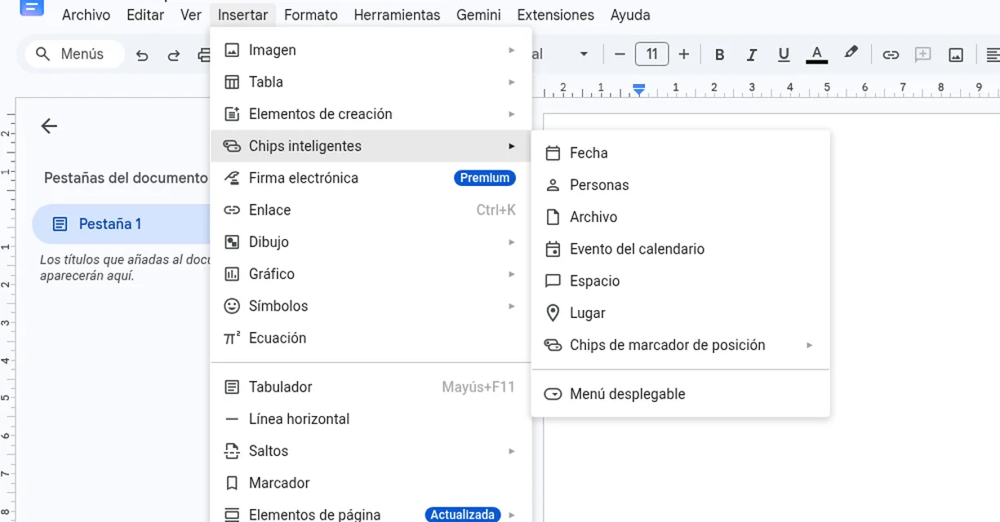
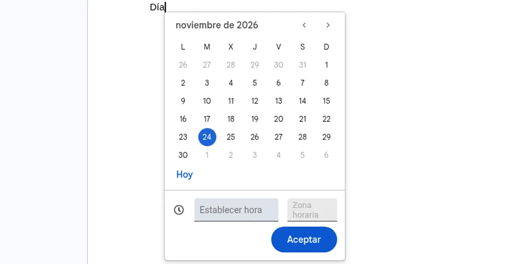
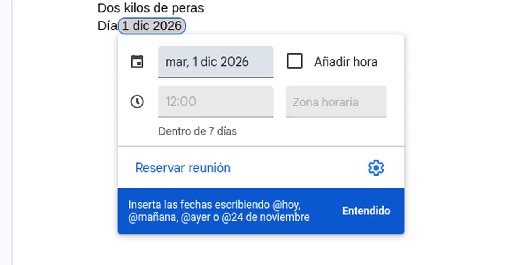
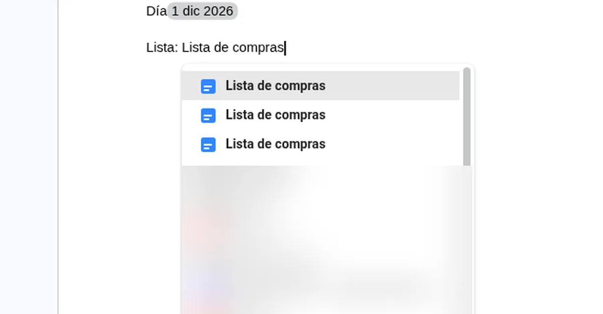
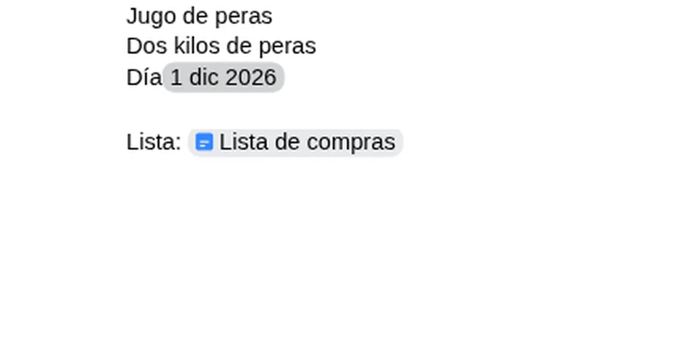
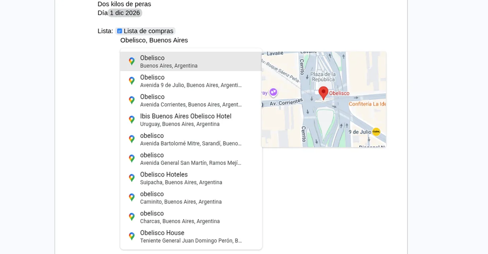
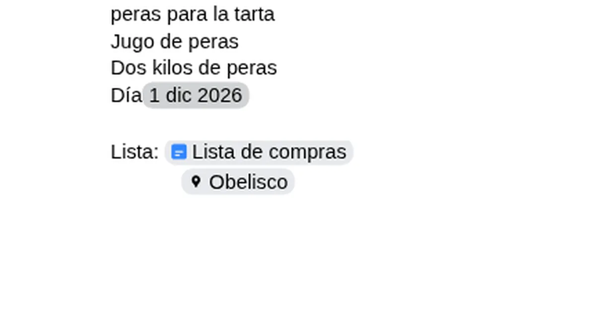
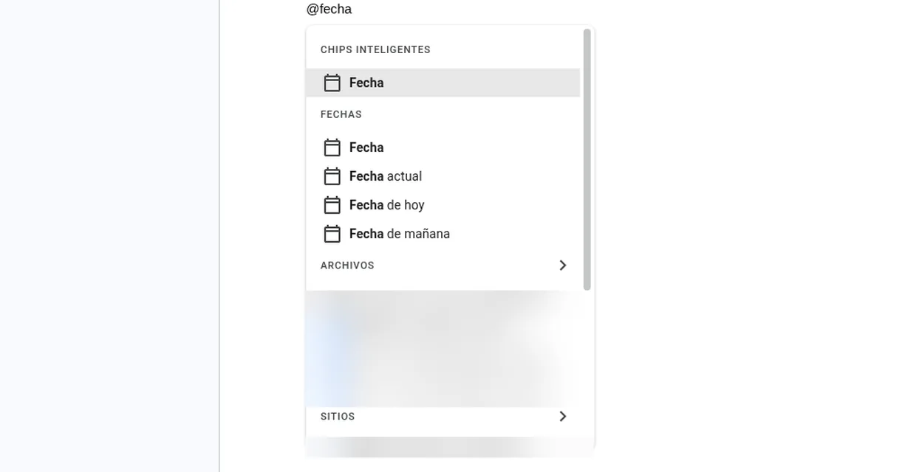
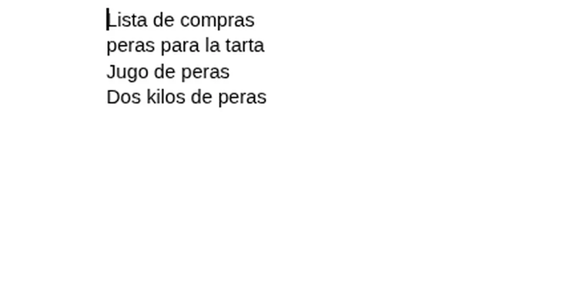

Curso de Google Documentos › Insertar › Lección 20
Lección 20 de 53 · menú Insertar
Chips inteligentes en Google Docs: fecha, personas, archivo y lugar
Fecha del video: · Programado
¿Sabías que Google Docs pone datos vivos en tu texto? Con Insertar → Chips inteligentes agregás chips de Fecha, Personas, Archivo y Lugar, y también los podés insertar escribiendo @. Acá lo vemos paso a paso.
En el ejemplo usamos el documento «Lista de compras». Agregamos chips de prueba y al final los borramos, así el documento quedó como estaba.
Paso 1: abrí Insertar → Chips inteligentes
Hacé clic en el renglón donde querés el chip. Arriba, en la barra de menús, tocá Insertar y después Chips inteligentes. Se abre un submenú con Fecha, Personas, Archivo, Evento del calendario, Espacio, Lugar, Chips de marcador de posición y Menú desplegable. En esta lección vemos Fecha, Personas, Archivo y Lugar (los chips de marcador de posición y el menú desplegable van en la próxima).

Paso 2: chip de fecha
Elegí Fecha: se abre un calendario con el mes arriba (con ‹ › cambiás de mes), el enlace Hoy, los campos Establecer hora y Zona horaria y el botón Aceptar. Marcá el día y tocá Aceptar. En el ejemplo elegimos el 1 de diciembre de 2026 y quedó el chip 1 dic 2026.

Paso 3: cambiá la fecha con un clic
Hacé clic en el chip de fecha: aparece la fecha completa (mar, 1 dic 2026), la casilla Añadir hora y la Zona horaria. Ahí cambiás la fecha o le agregás una hora. Docs también te recuerda que podés insertar fechas escribiendo @hoy, @mañana o @ayer.

Paso 4: chip de personas
Elegí Personas y empezá a escribir el nombre o el correo de un contacto; después elegilo de la lista. Según la ayuda de Google, funciona con usuarios que tienen correo de Gmail o de Workspace (también podés escribir @me para mencionarte a vos). Ojo: mencionar a alguien en un chip no le da acceso al documento; para eso tenés que compartirlo.
Paso 5: chip de archivo
Elegí Archivo y escribí el nombre del archivo (puede ser de Documentos, Hojas de cálculo o Presentaciones). La lista muestra los que coinciden: elegí el tuyo. En el ejemplo escribimos «Lista de compras». (En la captura difuminamos los demás archivos de la cuenta.)

Queda un chip con el ícono del documento y su nombre.

Paso 6: chip de lugar
Elegí Lugar y escribí una dirección o un lugar. Aparecen sugerencias con una vista previa del mapa: elegí la correcta. En el ejemplo escribimos «Obelisco, Buenos Aires» y elegimos Obelisco · Buenos Aires, Argentina.

Así quedan los chips dentro del texto: la fecha, el archivo y el lugar (con un pin del mapa).

Paso 7: más rápido, con @
Escribí @ en cualquier parte del documento y seguí con unas letras para filtrar. Por ejemplo, con @fecha aparece CHIPS INTELIGENTES → Fecha y, en FECHAS, Fecha actual, Fecha de hoy y Fecha de mañana. Elegí la opción y listo. (El menú @ también sugiere archivos y sitios: en la captura los difuminamos.)

Al final borramos los chips y el documento quedó como al principio.

Tip: según la ayuda de Google, si ponés el cursor sobre un chip ves información relacionada; en un chip de lugar podés abrir la ubicación en Google Maps o buscar cómo llegar.
Fuentes oficiales: Cómo insertar chips inteligentes en Documentos de Google, Inserta chips de lugar y Agrega elementos con el menú @. Mirá también el menú Insertar completo (video: Google Docs: menú Insertar paso a paso).
Mirá el Short
Estreno del Short: 01/12/2026 · 17:00 (hora Argentina)
Video relacionado: Google Docs: menú Insertar paso a paso (tutorial completo) — el video largo del menú Insertar (verlo en YouTube).
Fuente oficial: Ayuda de Editores de Documentos de Google. Capturas propias en un documento de ejemplo («Lista de compras»). El video usa voz generada con IA.